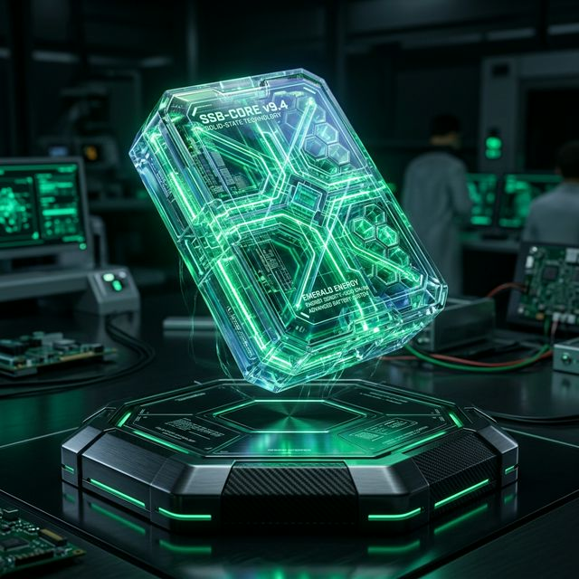

Solid-State Batteries Revolution
SustainaTech Editorial Team
September 5, 2025

As we navigate through 2026, the global shift towards sustainability has evolved from ambitious pledges to tangible execution. One of the most critical breakthroughs reshaping our future is unequivocally the advancement in Solid-State Batteries Revolution. This sector has seen an unprecedented influx of venture capital, government subsidies, and sheer engineering brilliance, propelling humanity closer to our ambitious net-zero targets. The innovation surrounding Solid-State Batteries Revolution proves that ecology and economy are no longer zero-sum variables.
The Current Landscape
To understand the magnitude of Solid-state EV batteries and safety, we must first contextualize the broader environmental necessity. Traditional models have proven fundamentally unsustainable, plagued by high emissions, resource depletion, and systemic inefficiencies. The rapid scaling of Solid-State Batteries Revolution offers a compelling counter-narrative. By leveraging cutting-edge materials science, real-time data analytics, and decentralized infrastructure, industry leaders are effectively decoupling economic growth from carbon emissions. This isn't just an incremental improvement; it represents a paradigm shift in how global supply chains and energy systems operate.
Key Innovations Driving the Market
At the heart of this disruption are three core mechanisms. First, the drastic reduction in the "green premium"—the previously prohibitive cost difference between sustainable and legacy technologies. Economies of scale have finally kicked in for Solid-state EV batteries and safety. Second, regulatory frameworks introduced globally in 2024 and 2025 have created massive compliance-driven markets, practically mandating the integration of Solid-State Batteries Revolution across Fortune 500 operations. Finally, AI and machine learning are being used to optimize these systems with unprecedented precision, predicting failure rates, maximizing output, and fundamentally changing the unit economics of sustainability.
The Economic Imperialities
Beyond the immediate environmental dividends, the widespread adoption of Solid-State Batteries Revolution is fostering entirely new economies. It is driving job creation in specialized engineering fields, requiring massive reskilling of the traditional blue-collar workforce into green-collar professionals. As regions rapidly scale up implementations of Solid-state EV batteries and safety, we are witnessing geopolitical shifts, with green energy independence becoming tantamount to national security. The compounding effects of these innovations guarantee that sustainability is no longer just a corporate social responsibility metric, but the defining economic imperative of the 21st century.
The Road Ahead
Despite these monumental strides, challenges remain. The bottleneck is no longer primarily technological, but rather infrastructural, regulatory, and related to supply-chain constraints for specialized raw materials required for Solid-state EV batteries and safety. However, as closed-loop systems mature and cross-sector collaboration deepens, these hurdles are rapidly diminishing. The trajectory for Solid-State Batteries Revolution is not just promising—it is the foundational bedrock upon which the sustainable economy of the 2030s will be built. Early adopters and forward-thinking enterprises that integrate these frameworks today represent the vanguards of a resilient, decarbonized global ecosystem.